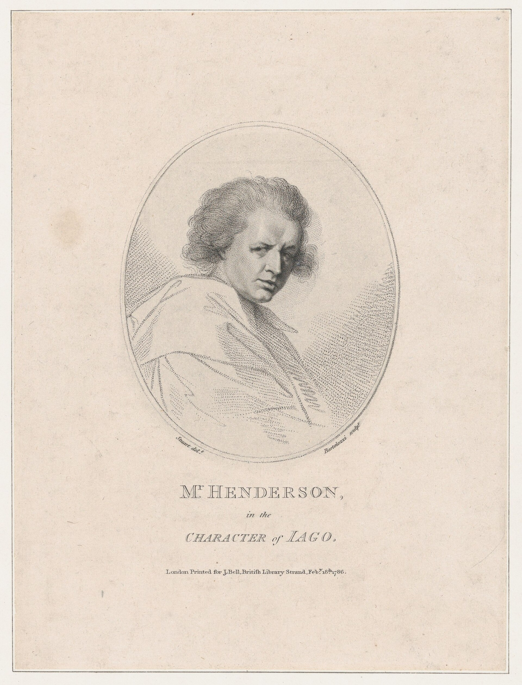

Chapter 11
Henderson Island
They did not know what they would find. The three boats had been thirty days at sea since the Essex went down—thirty days of rationed biscuit, of sleeping in shifts with limbs draped over gunwales, of watching the horizon for sails that never appeared. Now, on the morning of December 20, 1820, the men in the lead boat caught sight of land rising from the Pacific waste: Henderson Island, an uplifted coral atoll that appeared on no chart they carried, a nameless elevation that promised, at minimum, an end to the liquid treadmill of their open-boat navigation.
The landing was chaos dressed as deliverance. Chase, in his boat, recorded the scramble ashore—men falling onto their knees to drink from pools of rainwater, tearing at green vegetation with hands still cramped from oars. For a few hours, the beach became a theater of recovered appetite. They found peppergrass, seabirds, fish in the shallows. Fresh water, when they located a spring below the tideline, tasted like absolution. The seventeen survivors (for they had lost three men already to the sea and to despair) spread across the shoreline with the energy of men who believed their trial had reached its terminus.
But the camera pulls back. Within hours, the island’s true dimensions imposed themselves. Henderson measured roughly six miles by three, a raised coral platform fringed with cliffs, its interior a tangle of scrub and stunted trees. The seabirds nested on inaccessible ledges; the eggs, when visible, required dangerous climbs that yielded scant return. The fish, plentiful at first, proved limited to the reef margins. The spring, their salvation, produced only what it produced—enough for drinking, never enough for washing wounds or cooking freely. The green vegetation that had prompted such elation turned out to be mostly inedible: tough, fibrous, lacking caloric density. What had looked like a pantry from the water revealed itself, on inspection, as a display case with glass fronts.
This was the ledger they had not reckoned. Nantucket whaling trained its practitioners to calculate oil yields, voyage durations, profit shares—every resource converted to a tradeable entry. Henderson Island offered no such conversion. The island’s biomass existed, but not in forms accessible to starving men without proper tools. The birds had evolved to protect their eggs from crabs and other climbers; the vegetation had evolved to survive drought and salt spray, not to nourish large mammals. The Essex survivors had stumbled upon a natural system that functioned perfectly for its own purposes and not at all for theirs.
The week that followed became a slow-motion inventory of disappointment. Chase, ever the systematic observer, noted the failed attempts to expand their food sources. Men who had dragged themselves ashore with renewed strength found that strength dissipating in the labor of gathering—climbing, digging, netting—while the caloric returns remained stubbornly fixed. Nickerson, the cabin boy, would later remember the mood differently, with more emphasis on the psychological drain: the way hope, once activated, demands constant feeding, and the island refused this diet. Both accounts agree on the essential mathematics. The men were consuming energy to procure food that did not replace the energy consumed.
The discrepancy between Chase’s and Nickerson’s records matters. Chase, writing in 1821 with the urgency of recent experience and the authority of first mate, emphasizes the measurable failures: the eggs that could not be reached, the water that could not be increased, the fish that could not be caught in sufficient quantity. His is a captain’s accounting, concerned with what could have been done differently, with the gap between apparent resources and actual yields.
Nickerson, writing decades later with the particular authority of the cabin boy who had seen everything from below, emphasizes the emotional arc: the elation of landing, the grind of disappointment, the grim recognition that their situation had worsened rather than improved. Where Chase sees a problem of access and technique, Nickerson sees a problem of expectation and despair.
Together they describe not a single island but two—the island of possibility that appeared from the boats, and the island of limitation that revealed itself through residence.
The island’s prior human visitors had left only traces. Sometime in the recent past—perhaps months, perhaps years—other castaways or explorers had scratched marks into trees, built rudimentary shelters, attempted the same conversions that the Essex men were now attempting. Later, on 2 March 1819, Captain Henry King of the Elizabeth had landed to find the King’s colors already flying, his crew adding their own inscription to the arboreal record. For a while the place had borne two names: Elizabeth and Henderson. This dual identity, unknown to the starving men of 1820, suggested something about the island’s function in the Pacific geography. It was a stopping point, a false destination, a place where voyagers paused before discovering that pause could not become residence.
The Essex survivors faced this discovery without knowing its history. They built shelters from what materials they could find. They organized watches and foraging parties. They maintained, for several days, the rituals of shipboard life—cooking fires, the distribution of rations, the consultation of officers. But the consultations grew shorter, the silences longer. The island’s barrenness was not absolute; it was relative to their needs and their numbers. Seventeen men required more than six square miles of coral could sustainably provide. The birds, once disturbed, abandoned their nesting sites. The fish, once netted, learned the patterns of the nets. The peppergrass, once gathered, did not regrow in the time available.
The pattern of their exploitation repeated a larger history of Pacific island encounters. European and American voyagers had developed, over two centuries of exploration, a particular way of reading unfamiliar landscapes. The initial assessment emphasized immediate utility: water, wood, food, shelter. The secondary assessment measured sustainability: how long these resources would last, how many men they could support, what investment of labor they required. The tertiary assessment, usually reached too late, recognized the gap between extraction and renewal. Henderson Island compressed this three-stage process into a single week. The men who had landed with renewed purpose were, by December 24, already calculating the point at which continued residence would become fatal.
The physical toll of the island week is harder to recover than the narrative of disappointment, but certain facts permit inference. Men who had survived thirty days of open-boat exposure arrived at Henderson with depleted fat reserves, compromised immune function, and the particular vulnerability to cold that accompanies starvation. The island offered relief from the constant wet and wind of the boats, but replaced these with new demands: the climbing, digging, and carrying required by foraging; the exposure to sun and insects onshore; the sleep disruption of an unfamiliar environment. They ate more than they had on the boats, but not enough more to reverse their decline. They drank fresh water, but the spring’s output limited their consumption. The net effect, visible in their subsequent performance, was continued deterioration masked by temporary relief.
By December 26, the arithmetic had become undeniable. The men who had landed with renewed purpose were now weaker than when they had arrived, their bodies having metabolized hope into effort and effort into disappointment. The council that convened that day—Pollard, Chase, Joy, the surviving officers and men—faced a choice that inverted their original calculation. Henderson Island could not sustain them. To remain was to starve slowly. To leave meant returning to the open boats, but with a critical difference: they had consumed their transit rations during the week of false security, and the island had not replaced them.
Here the ledger mentality imposed its final indignity. The men had salvaged provisions from the Essex before abandoning her: bread, water, some few stores. These had been carefully husbanded through the thirty days of open-boat sailing, measured against the distance to South America, calculated to last until rescue or landfall. Henderson Island had seemed to render these calculations obsolete; the men had eaten more freely, drunk more deeply, on the assumption that the land would assume the burden of supply. Now the accounts came due. The remaining bread would not last the renewed voyage. The water casks, depleted by the week’s consumption, would not carry them to any known destination.
The decision that emerged from the December 26 council was a measure of their desperation. They would cannibalize the Essex’s remaining provisions—not to eat, but to refit. The boats needed repair: seams caulked, sails patched, water casks sealed. The materials for this work had to come from somewhere, and the only source was their own future. They tore into the bread bags, the water stores, the carefully preserved remnants of their shipboard life, converting sustenance into seaworthiness. It was a transaction that made sense only in the logic of their extremity: better to have functional boats with insufficient food than sufficient food in boats that would not float.
The work took another day. Men who had eaten poorly for a week now labored through December 27 with the knowledge that every hammer blow, every stitch, was purchased with hunger deferred. Those on the boat temporarily moved to Joy’s and Chase’s boats during repairs; the third boat, temporarily abandoned as a storage hulk, distributed its occupants among the survivors. The resulting flotilla—two whaleboats carrying seventeen men where they had been designed for six or eight—rode low in the water, their freeboards reduced, their stability compromised by the crowding.
They left Henderson Island on December 27, 1820, exactly one month after the whale had struck the Essex. The departure was not a continuation of their original voyage but its negation. They had sailed east from the wreck site on the assumption that this course, while longer, avoided the dangers of the Pacific islands: the cannibals of Nantucket rumor, the hostile populations that whaling gossip had inflated into certainties. Henderson Island was supposed to have validated this choice: land without inhabitants, rescue without the risks of contact. Instead it had become a trap that consumed their resources and returned them to the sea in worse condition than when they had found it.
The intention now was Easter Island, though this destination carried little more substance than hope. The navigational knowledge available to Pollard and Chase placed Easter Island somewhere in the eastern Pacific, a speck of land with a mysterious statue tradition, occasionally visited by whalers but not reliably positioned on their mental charts. They estimated—guessed, really—that they could reach it before their provisions failed. The estimation would prove wrong, as estimations in their condition usually did. But the alternative was to remain on Henderson, watching their numbers diminish one by one, until the last man died on a beach that had promised salvation.
The boats that cleared Henderson’s reef on December 27 carried men who had been transformed by their week ashore. The physical transformation was visible: thinner, weaker, slower in their movements, more prone to the cold that came with Pacific nights. The psychological transformation was harder to read but equally decisive. They had experienced the collapse of a narrative: the narrative of rescue, of landfall, of the body’s eventual reward for endurance. Henderson Island had offered them a version of this narrative and then withdrawn it. The men who pushed off from that shore knew, in ways they had not known before, that the ocean was not a medium of transit but an antagonist, that land was not sanctuary but another variable in a calculation that kept producing insufficiency.
Chase, writing his account in the months after rescue, would emphasize the practical failures: the inaccessible eggs, the limited water, the exhaustion of resources. Nickerson, writing decades later with the distance of age, would emphasize the emotional arc. Both records are necessary to understand what Henderson Island represented in the larger catastrophe. It was not simply a failed opportunity but a structural failure of the kind that would recur throughout the Essex disaster: the mismatch between human expectation and environmental reality, between the habits of calculation developed in one context and the demands of survival imposed by another.
The psychological architecture of their despair had been constructed in layers, each stratum corresponding to a specific phase of recognition. First came the sensory betrayal of December 20 itself: the way fresh water, so long imagined, proved less restorative than anticipated, the body’s capacity for absorption diminished by prolonged deprivation. Men who had fantasized about drinking until their bellies rounded instead found themselves nauseated by more than small quantities, their shrunken stomachs rejecting the very abundance they had craved. The green vegetation, similarly, introduced its own complications. Digestive systems adapted to hardtack and salt pork revolted against the fibrous bulk of island plants, producing the paradox of men with food in their mouths who remained nutritionally empty.
The island’s acoustic environment compounded their disorientation. After thirty days of the open ocean’s limited register, wind, wave, the creak of oarlocks, Henderson presented a cacophony of unfamiliar sound: the mechanical grinding of the reef at tide changes, the explosive territorial calls of seabirds whose nesting colonies they could see but not reach, the strange absence of mammalian noise. This was a landscape without the comforting indicators of terrestrial habitability. No insects hummed in sufficient numbers to suggest fertile soil. No running water carved channels through the interior. The silence of the island’s center, where the scrub gave way to bare coral platform, spoke of geological youth and biological poverty. The men had been trained to read landscapes for whales; they possessed no comparable skill for reading islands, and the island offered no Rosetta stone for their translation.

Their failed technologies of extraction revealed the depth of their dependency on the Essex’s lost infrastructure. The whaleboats had carried certain tools: knives, lances, the implements of rendering. But the island demanded different instruments: climbing gear, fishing nets with appropriate mesh, containers for water transport. They improvised, as sailors must, but improvisation consumes energy and yields inconsistent results. A lance shaft became a fishing pole; a piece of sailcloth, inadequately weighted, failed as a seine. Each adaptation represented a small defeat, an acknowledgment that their existing competence did not transfer to this new environment. The Nantucket system of whaling, so sophisticated in its domain, proved approximately as useful on Henderson Island as the island’s birds would have been in pursuit of sperm whales.
The social dynamics of their confinement accelerated under these pressures. Seventeen men, distributed across a small island without the organizing structures of shipboard life, developed new patterns of association and avoidance. The officers maintained their consultations, but the consultations no longer produced decisive action. The men divided into foraging parties, but the parties returned with diminishing returns and increasing resentment. The particular horror of Henderson Island was that it provided enough activity to prevent the stupor of complete hopelessness, but not enough result to justify the activity. They were not, as they would be later, reduced to absolute inaction; they were reduced to futile action, which exhausts the spirit more thoroughly than surrender.
The weather of that week, recorded only in its effects, not in meteorological data, appears to have cooperated with the island’s betrayal. December in the central Pacific brings the southern summer, with its squalls and unpredictable winds. The men had sought shelter from the ocean’s exposure, but found instead a different exposure: the sun’s intensity on coral and scrub, the night cold radiating from the same surfaces, the sudden rain that filled their catchment briefly and then evaporated or drained away. Their shelters, built from inadequate materials with inadequate tools, leaked and collapsed. They had exchanged the whaleboats’ constant wet for intermittent wet and dry, a thermal cycling that taxed their compromised bodies. The island was not actively hostile, as a storm or a reef might be; it was passively inadequate, which proved harder to combat.
The presence of prior human marks on the island, those inscriptions from Captain King’s visit and perhaps others, introduced a temporal dimension to their despair that the open ocean had not. The ocean was eternal, indifferent, continuous. The island was historical, marked by specific prior attempts at the same conversions they were attempting. The Essex survivors could not read the inscriptions, but they could recognize them as human effort, and they could measure their own effort against this precedent. Someone had been here before. Someone had left. The logic was inescapable: the island had not sustained previous visitors, and it would not sustain them. They were not pioneers discovering an empty landscape; they were participants in a recurring failure, adding their layer of debris to an accumulation of disappointed extraction.
The decision to cannibalize their provisions for boat repair represented more than practical necessity; it was an admission of categorical error. They had preserved those provisions through thirty days of extreme privation, measuring each portion against an anticipated future. The Henderson landing had suspended this calculus, substituting the assumption of land-based abundance for the discipline of maritime rationing. Now they faced the consequences of that suspension: the future they had preserved against had arrived, and they had already spent its resources.
The island remained behind them, unnamed in their immediate records, its dual identity as Elizabeth and Henderson unknown to men who had never seen Captain King’s inscription. It would wait in the Pacific for the next castaways, the next explorers, the next victims of miscalculation. The Essex survivors had added their own marks to its history, shelters, fire rings, the scattered debris of their attempted settlement, without knowing that they were participating in a pattern. Henderson Island was a place where voyagers stopped because they had to, discovered that stopping solved nothing, and left because they had to, carrying away less than they had brought.
The remaining Essex crewmen, now numbering seventeen in three boats, resumed their journey on December 27 with the intention of reaching Easter Island. The depleted, weakened state of the men as they leave Henderson Island creates the logistical and psychological pressure that will fracture their collective strategy.